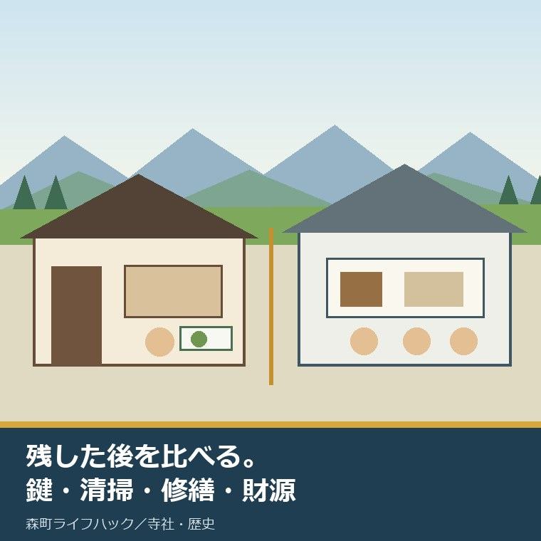
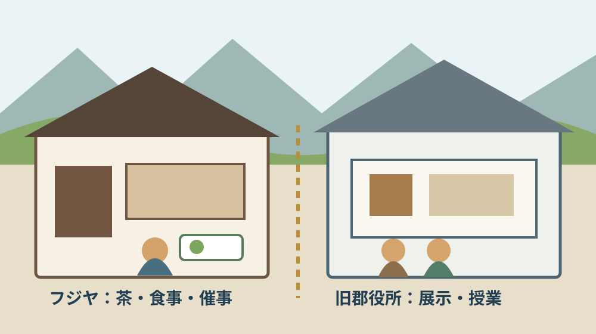
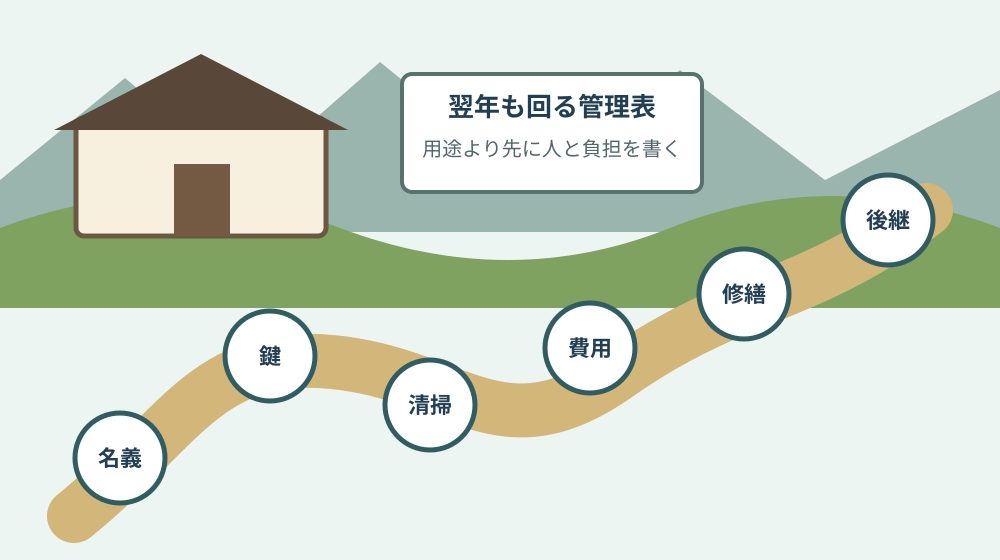

森町の古建築活用｜藤江家と旧郡役所を比較

この記事の要点
Q. 森町の古い建物は、残した後にどう使い続けるのですか。
A. 用途だけでなく、鍵・清掃・修繕・財源を比べます。旧藤江勝太郎家住宅のフジヤは地域団体が飲食と催事を回す指定管理型。旧周智郡役所は町立資料館として無料展示と学習を担う型です。工事総額や年次維持費は未確認で、売上だけの優劣は付けられません。
森町で古い建物を見ると、「残っていてよかった」で話が終わりがちです。けれど、建物は開けなければ傷みます。開ければ人件費、光熱費、清掃、保険、修繕が発生します。この記事は、残した後の負担を知りたい住民と来訪者へ向けた比較です。
比べるのは、旧藤江勝太郎家住宅を活用した「日本烏龍紅茶会社発祥の地 フジヤ」と、旧周智郡役所を活用する森町立歴史民俗資料館です。前者は2026年4月29日に開業しました。後者は1979年から資料館として使われています。
古い建物は、残しただけでは続きません。誰が鍵を開け、掃除し、直し、維持費を負うかまで決まって初めて活用になります。これがこの記事の判断軸です。
確認日は2026年9月2日です。森町公式の町長活動記録、歴史民俗資料館、図説森町史、文化財保存活用地域計画案、2025年度当初予算概要を確認しました。営業日、移築時期、費用は更新される可能性があります。
結論：二つは「稼ぐ建物」と「無料の建物」ではない
フジヤは展示にカフェとイベントスペースを重ね、地元住民が中心となる城下社中が指定管理者として運営します。来訪者が飲食や催事で建物を使う仕組みです。
旧周智郡役所は、森町立歴史民俗資料館として農耕具、生活用品、古文書などを展示します。一般公開は無料で、学校授業と社会教育にも利用されます。収蔵品を守り、地域の記憶へ接続する仕組みです。
カフェに売上があるから自立、無料だから公費頼み、と単純には分けられません。飲食には仕入れ、衛生管理、接客、廃棄、催事調整があります。資料館には収蔵、温湿度、解説、授業対応、記録があります。
比較すべきなのは、用途、開ける人、収入源、町費の役割、修繕責任、公開日数です。収益額だけでは、建物が地域で果たす仕事を測れません。
| 比較軸 | 旧藤江勝太郎家住宅／フジヤ | 旧周智郡役所／歴史民俗資料館 |
|---|---|---|
| 現在の用途 | 展示、カフェ、イベント | 農耕具・生活用品・古文書の展示、授業、社会教育 |
| 運営 | 城下社中が指定管理 | 森町立施設、社会教育課文化振興係 |
| 利用者負担 | 飲食や催事ごとの支出がありうる | 一般公開は無料 |
| 公表済み費用 | 2025年度資料に改修実施設計308万円、伴走支援482万1千円 | 2025年度資料に移築等基本構想支援667万7千円 |
| 未確認 | 工事総額、年次維持費、人員、収支 | 移築工事総額、年次維持費、日常管理人数 |
旧藤江勝太郎家住宅は、2026年4月29日に開いた
森町公式の町長活動記録によると、フジヤは2026年4月29日に開業しました。町民向け内覧会は4月25日と26日。江戸時代後期の建物を2025年度に改修したとされています。
施設名は「日本烏龍紅茶会社発祥の地 フジヤ」です。藤江勝太郎の生家で、勝太郎が緑茶、烏龍茶、紅茶に精通し、明治期に烏龍茶製法を広めた人物であることを展示します。
カフェでは烏龍茶、森の茶、旬の野菜を使ったランチを提供すると町は紹介しています。建物を眺めるだけでなく、茶を飲み、食事をし、滞在する理由が置かれました。
イベントスペースもあります。展示だけなら来館動機は一度で終わることがあります。食事と催事が変われば、再訪の入口を作れます。これは活用の良い設計です。
一方、飲食は建物を開ける回数が増えます。水、電気、排水、厨房、トイレ、換気、ごみ、害虫への対応が必要です。古い木部を守る仕事と、営業を回す仕事が同時に発生します。
運営する城下社中は、町公式が「地元の人たちが中心となり組織する」と説明するまちづくり団体です。観光客に使ってもらう前に、地元の人が鍵と現場を担っている点を見落とせません。
旧周智郡役所は、移築して47年資料館を続けた
旧周智郡役所は1885年、明治18年に建てられました。当初は現在の森小学校南側にあり、1974年に蓮華寺に隣接する現在地へ移築されました。
1979年から森町立歴史民俗資料館として活用されています。2026年から数えると47年です。フジヤの新しさと比べると、こちらは長期運用の実績そのものが資料になります。
森町公式は、旧郡役所を移築した建物が資料館だと説明しています。展示は、森町の歴史や暮らしに関する農耕具、生活用品、古文書などです。
古い建物の中へ古い道具を置けばよいわけではありません。収蔵品の来歴を確認し、番号を付け、傷みを見て、展示と保管を分ける仕事があります。無料公開の裏にも専門的な手間があります。
学校授業と社会教育に使われる点も大きいです。来館者数だけでは、子どもが地域史へ触れる授業一回の価値を売上へ換算できません。
町指定文化財でもあります。建物を移して残したこと、別用途で47年使ったこと、収蔵品を抱え続けたこと。この三つを一つの「保存」で丸めると、負担の場所が見えなくなります。

費用は「確認できた範囲」だけで読む
2025年度当初予算概要には、旧藤江家改修実施設計として308万円、城下地区の歴史的資源を活用した町なか活性化への伴走支援として482万1千円が載っています。
この二つを足して工事総額790万1千円と書くことはできません。実施設計と伴走支援は目的が違います。建築工事、設備、備品、外構などの総額を示す数字ではありません。
旧郡役所側には、資料館移築等基本構想支援として667万7千円が載っています。内容は郡役所移築計画、郡役所活用計画、収蔵品展示保管計画、収蔵庫計画です。
こちらも移築工事費ではありません。構想を作る費用と、建物を実際に移す費用を混ぜないことが必要です。確定した移築日や総額も、今回確認した一次資料からは判断できません。
意外なのは、二つとも「建物だけ」の話ではないことです。フジヤには運営伴走、旧郡役所には収蔵庫と展示保管の構想が付いています。使い方と裏方を設計する費用が先に見えています。
年間の電気、水道、保険、清掃、植栽、警備、小修繕、設備更新、人件費は公表資料で確認できませんでした。分からない費用を推測で埋めず、比較表では未確認としました。
森町での暮らしへの影響
フジヤは城下地区に滞在先を増やします。茶を飲む、食事をする、催事へ参加するという時間が生まれれば、古い町並みを歩く理由も増えます。
ただし、来訪者が増えるほど駐車、案内、近隣への音、搬入、ごみ、トイレの負担も増えます。観光の利益と、周辺住民が払う時間を同じ表へ置く必要があります。
資料館は、暮らしの道具を町内で見る入口です。実家の納屋から出てきた農具や古文書が何か分からないとき、地域の比較材料があることは助けになります。
一方、資料館は収蔵量が増えるほど保管場所が要ります。寄せられた物をすべて展示できるわけではありません。建物を残す話は、物を選び、断り、保管する話でもあります。
町の人は、すでに清掃、案内、運営、資料整理、催事、近隣調整の負担を払っています。来訪者側は「もっと開けてほしい」と言う前に、誰がその一日を担うかを見るべきです。
古建築全体の位置づけは、森町文化財保存活用地域計画、2026年7月認定で何が変わるで整理しています。認定と日常管理は別の仕事です。
良い点：使い方を一つに決めつけていない
良い点は、二つの建物を同じ観光施設へそろえていないことです。藤江家は茶の物語と飲食、旧郡役所は暮らしの資料と学習。それぞれの由来に合う用途が置かれています。
フジヤは地元団体が指定管理を担います。行政の直営だけにせず、地域側が催事と飲食を組み替えられる余地があります。
旧郡役所は無料公開を続けています。収益が出にくい展示と教育を、公立施設として支える意味があります。売上がない時間も無駄ではありません。
建物の指定や登録を考える所有者は、登録有形文化財1万5041件｜森町の古民家を登録する条件も確認できます。登録できるかと、営業や維持が回るかは分けて考えます。
注文したい点：維持費と人員が見えない
その上で注文があります。工事や構想の予算だけでなく、開業後に誰が何日開け、どの費用を売上で賄い、どこから町費を使うかが分かると、住民は活用を長い目で判断できます。
城下社中の人数、勤務の形、収支、修繕分担は今回の一次資料で確認できません。旧郡役所の日常管理人数、年間維持費、移築の確定時期も確認できませんでした。
私は、数字が出ていないから失敗だとは考えません。開業直後に固まらない項目もあります。ただ、分からない状態が長く続くと、担い手の疲れと建物の傷みが外から見えません。
ここは迷います。収支を細かく公開すれば運営側の事務が増えます。出さなければ町民は負担を測れません。少なくとも年1回、公開日数、利用件数、主な修繕、次年度の課題が一枚で見える形はほしいです。
文化財を守ると言いながら、担い手の無償労働を見ないのは筋が違います。建物の美しさより先に、鍵当番、清掃、会計、後継を具体名詞で出す必要があります。
友田家住宅の保存修理と一般住宅の負担の違いは、友田家住宅から実家の古さを値打ちと費用に分けて見るで詳しく扱っています。

対案・結論：今日、鍵を開ける人を書く
今日できる小さな一歩は、古い家や地域施設について、次に鍵を開ける人の名前を書くことです。所有者、家族、管理団体、町の担当の誰かを一人置きます。
次に、開ける頻度を書きます。毎日、週末、月1回、催事時だけでは、換気、清掃、漏水発見の間隔が違います。無理な頻度を理想として書かないでください。
三つ目に、年間の負担上限を置きます。光熱、保険、清掃、小修繕、草木、設備点検を分けます。金額が不明なら見積り取得担当と期限を書きます。
四つ目に、用途を一つだけ試します。展示、喫茶、会議、宿泊、事務所は必要な設備と許可が異なります。最初から全部を載せると、改修費も運営も膨らみます。
五つ目に、やめる条件を決めます。担い手が二人を下回る、赤字が上限を超える、雨漏りが直せないなどです。撤退条件があるほうが、人に無理を寄せず試せます。
家族に残す記録
個人所有の古い家なら、住所と地番、土地建物の名義、鍵の所在、築年の根拠、図面、修繕履歴、保険、電気、水道、排水、接道、境界を一枚の索引にします。
文化財の指定や登録がある場合は、正式名称、指定区分、指定日、担当窓口、現状変更の確認先を加えます。指定がないことを、価値がないことと同一にしません。
用途変更や飲食営業を考えるなら、建築、消防、保健所への確認記録を分けます。古いから例外になるとは決めず、工事前に必要な確認を取ります。
売るか残すか未定でも、記録は使えます。友田家住宅、次郎柿原木、三つの舞楽を暮らしにつなぐ記事は、文化財を生活から切り離さない入口です。
大石の視点
ここからは、大石浩之（磐田市／不動産業）としての意見です。体験ストックに古建築運営の実話がないため、現場で経験した話としては書きません。
不動産の相談では、建物の値段より先に、名義、道路、境界、雨漏り、残置物、維持費を見ます。古建築も同じで、物語が実務を免除することはありません。
私はフジヤの開業を前向きに見ています。地元の人が運営し、茶を飲む理由と滞在時間を作ったからです。その努力を認めた上で、数年後の担い手と修繕財源まで見続けたいです。
旧郡役所には、無料展示と教育を続けた47年があります。派手な新規開業ではありませんが、毎年開け、資料を守り、授業に使う積み重ねは軽くありません。
残すか壊すかの二択へ急がず、使える回数と負担できる額を先に出す。その数字があれば、売却、賃貸、保存、縮小のどれを選ぶにも材料が増えます。
まとめ
フジヤは2026年4月29日に開業し、展示、カフェ、イベントを地元中心の城下社中が運営します。旧周智郡役所は1979年から町立歴史民俗資料館として無料展示、授業、社会教育を担います。
確認できた予算は実施設計、伴走支援、基本構想支援です。工事総額や年間維持費ではありません。分からない数字を足して比較しないことが必要です。
今日の一歩は、鍵を開ける人を一人書くことです。清掃、費用、修繕、後継へ順に広げれば、古い建物を残した後の現実が見えます。
よくある質問
Q1. 旧藤江勝太郎家住宅のフジヤは、いつ開業しましたか。
A1. 森町公式によると、旧藤江勝太郎家住宅を活用した「日本烏龍紅茶会社発祥の地 フジヤ」は2026年4月29日に開業しました。展示、カフェ、イベントスペースがあり、指定管理者の城下社中が運営します。営業日や催事は利用前に公式案内で確認してください。
Q2. フジヤと旧周智郡役所では、どちらの活用が優れていますか。
A2. 用途が違うため、売上だけでは優劣を決められません。フジヤは飲食と催事を組み込み、地域団体が運営する型です。旧郡役所は町立歴史民俗資料館として無料展示、学校授業、社会教育を担います。担い手、公開日数、修繕、収蔵品管理まで分けて比べます。
Q3. 古い家を活用したい所有者が、今日確認できることは何ですか。
A3. 紙を一枚用意し、建物の名義、鍵を開ける人、月1回の清掃担当、年間に負担できる上限額を書きます。用途を決める前に、雨漏り、電気、水道、トイレ、接道、境界も未確認のまま残さず一覧化します。文化財指定や営業許可は、その後に担当窓口へ確認します。
公開内容、営業、費用、移築計画は変わる場合があります。個別建物の安全、改修、用途変更、文化財手続、税務は、町の担当窓口と建築・法律・税務などの専門家へ確認してください。
参考にした公式情報
- 町長の活動記録／静岡県森町（2026年4月29日の開業、内覧会、施設用途、城下社中の運営を2026年9月2日に確認）
- 森町立歴史民俗資料館／静岡県森町（旧周智郡役所の建築年、移築、資料館利用、展示、無料公開を2026年9月2日に確認）
- 図説森町史 44 森町の民家／静岡県森町（旧郡役所の町指定、町内民家の記録を2026年9月2日に確認）
- 森町文化財保存活用地域計画案／静岡県森町（旧藤江勝太郎家住宅の寄贈、旧郡役所の移築と活用の記録を2026年9月2日に確認）
- 2025年度当初予算概要／静岡県森町（旧藤江家の実施設計・伴走支援、資料館移築等基本構想支援の予算額を2026年9月2日に確認）

磐田市で小さな不動産業を営みながら、森町の空き家・農地・実家じまいのご相談を受けています。地域と不動産実務をつなぐ目線で、確認の順番まで具体的に書きます。
最終確認日：2026-09-02 ／ 本記事は公表情報と執筆者の見解を分けて記載しています。工事総額、年次維持費、運営人数、収支は確認できた一次資料に記載がないため推測していません。